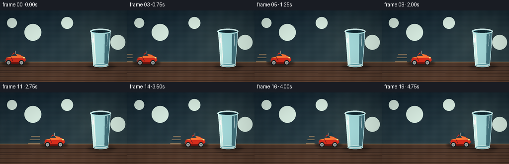
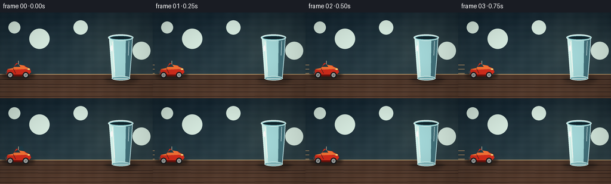
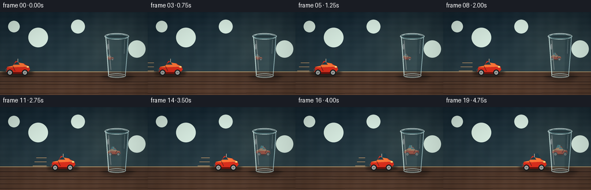
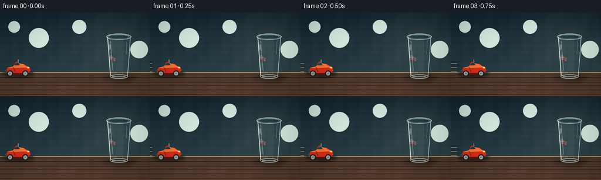
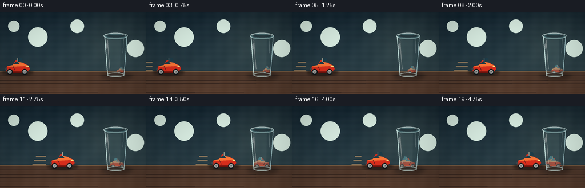
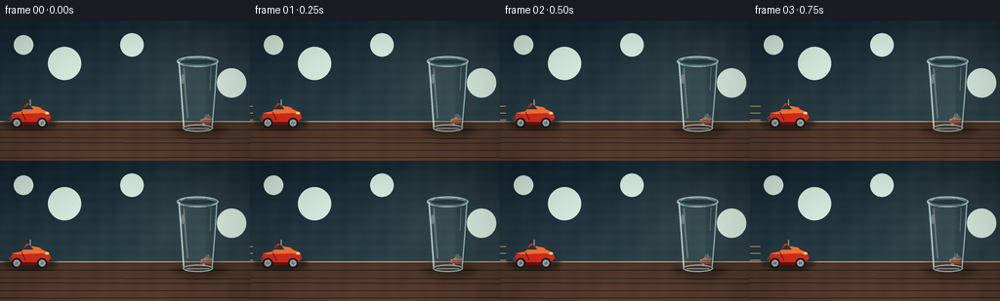

CODING AGENTS AS PIXEL WORLD MODELS
traex/GPT-5.6-Sol · phygen_063
点击播放 · 原生 RGB 像素
逐轮保存的候选
回放视频、检查图与代码变化。
每份候选均可单独播放。实际图片检查记录在下方工具轨迹中。
候选 01播放与检查图
点击播放 · 原生 RGB 像素


展开代码变化
--- 上一保存版本
+++ 本次保存版本
@@ -0,0 +1,178 @@
+from pathlib import Path
+import math
+import numpy as np
+from PIL import Image, ImageDraw, ImageFilter
+import artifact_io
+
+W,H,N = 256,144,20
+S=4
+WS,HS=W*S,H*S
+
+def sc(v): return int(round(v*S))
+def pts(seq): return [(sc(x),sc(y)) for x,y in seq]
+
+def ellipse(d, box, fill, outline=None, width=1):
+ x0,y0,x1,y1=box
+ d.ellipse((sc(min(x0,x1)),sc(min(y0,y1)),sc(max(x0,x1)),sc(max(y0,y1))), fill=fill, outline=outline, width=sc(width) if outline else 1)
+def rect(d, box, fill, outline=None, width=1, radius=0):
+ b=tuple(sc(v) for v in box)
+ if radius: d.rounded_rectangle(b, radius=sc(radius), fill=fill, outline=outline, width=sc(width) if outline else 1)
+ else: d.rectangle(b, fill=fill, outline=outline, width=sc(width) if outline else 1)
+def line(d, xy, fill, width=1): d.line(pts(xy), fill=fill, width=sc(width), joint='curve')
+def poly(d, xy, fill, outline=None): d.polygon(pts(xy), fill=fill, outline=outline)
+
+def car_layer(cx, cy, scale=1.0, facing=1, alpha=255, reflected=False, wheel_angle=0):
+ """Side-view toy sports car, cx/cy measured at wheel axle / ground."""
+ im=Image.new('RGBA',(WS,HS),(0,0,0,0)); d=ImageDraw.Draw(im,'RGBA')
+ def X(u): return cx + facing*u*scale
+ def Y(v): return cy + v*scale
+ def PP(arr): return [(sc(X(x)),sc(Y(y))) for x,y in arr]
+ # color palette designed to remain identifiable through transparent glass
+ if reflected:
+ body=(238,78,48,alpha); dark=(90,30,25,alpha); hi=(255,174,121,alpha)
+ glass=(93,172,184,int(alpha*.78)); tire=(53,61,62,alpha)
+ else:
+ body=(220,47,29,alpha); dark=(109,18,13,alpha); hi=(255,119,56,alpha)
+ glass=(31,61,73,alpha); tire=(23,26,28,alpha)
+ # wheel shadows/contact
+ ellipse(d,(X(-13)-6*scale,Y(2)-1.2*scale,X(13)+6*scale,Y(2)+2.0*scale),(18,17,16,int(alpha*.22)))
+ # chassis lower band
+ d.rounded_rectangle((sc(min(X(-18),X(18))),sc(Y(-7)),sc(max(X(-18),X(18))),sc(Y(0))),radius=sc(2*scale),fill=dark)
+ # main toy body: sloped hood and compact roof
+ bodypts=[(-20,-7),(-17,-12),(-8,-14),(-3,-22),(7,-23),(13,-16),(20,-13),(22,-7),(18,-3),(-19,-3)]
+ d.polygon(PP(bodypts),fill=body)
+ # brighter upper paint plane
+ d.polygon(PP([(-18,-12),(-8,-14),(-2,-20),(7,-21),(12,-16),(19,-13),(10,-12),(-12,-11)]),fill=hi)
+ # cabin windows split by pillar
+ d.polygon(PP([(-1,-20),(2,-26),(7,-27),(11,-18)]),fill=glass)
+ d.polygon(PP([(-2,-20),(-7,-16),(4,-16),(1,-20)]),fill=glass)
+ line(d,[(X(1),Y(-20)),(X(1),Y(-26))],(235,210,181,int(alpha*.8)),max(1,scale*.7))
+ # hood highlight and molded seams
+ line(d,[(X(12),Y(-13)),(X(20),Y(-11))],(255,175,107,int(alpha*.75)),max(1,scale*.7))
+ line(d,[(X(-8),Y(-13)),(X(-4),Y(-5))],(112,20,16,int(alpha*.7)),max(1,scale*.55))
+ # bumpers / lamps; front is +u
+ ellipse(d,(X(18)-2*scale,Y(-12)-1.3*scale,X(18)+2*scale,Y(-12)+1.3*scale),(255,226,126,alpha))
+ rect(d,(min(X(-21),X(-18)),Y(-8),max(X(-21),X(-18)),Y(-5)),(65,74,77,alpha),radius=.6)
+ # wheels and rotating spokes
+ for wu in (-13,13):
+ wx,wy=X(wu),Y(-2)
+ ellipse(d,(wx-5.2*scale,wy-5.2*scale,wx+5.2*scale,wy+5.2*scale),tire)
+ ellipse(d,(wx-3.4*scale,wy-3.4*scale,wx+3.4*scale,wy+3.4*scale),(160,165,164,alpha))
+ ellipse(d,(wx-1.25*scale,wy-1.25*scale,wx+1.25*scale,wy+1.25*scale),(57,61,62,alpha))
+ for k in range(4):
+ a=wheel_angle+k*math.pi/2
+ ex=wx+math.cos(a)*2.8*scale; ey=wy+math.sin(a)*2.8*scale
+ line(d,[(wx,wy),(ex,ey)],(235,224,208,int(alpha*.9)),max(.55,scale*.6))
+ return im
+
+def make_frame(i):
+ t=i/(N-1)
+ # smooth acceleration and braking, yet monotonic in every frame
+ p=t*t*(3-2*t)
+ # high resolution ambient base
+ y=np.arange(HS)[:,None]/S
+ x=np.arange(WS)[None,:]/S
+ arr=np.zeros((HS,WS,3),dtype=np.float32)
+ # cool studio wall with subtle pool of warm light near glass
+ wall=np.clip(y/104,0,1)
+ arr[:,:,0]=21+21*wall
+ arr[:,:,1]=39+23*wall
+ arr[:,:,2]=50+20*wall
+ glow=np.exp(-(((x-198)/67)**2+((y-50)/56)**2))*22
+ arr[:,:,0]+=glow*0.76; arr[:,:,1]+=glow*0.72; arr[:,:,2]+=glow*0.48
+ # tabletop, wood-like gradient
+ table=y>=104
+ ty=np.clip((y-104)/40,0,1)
+ arr[:,:,0]=np.where(table,77+23*ty,arr[:,:,0])
+ arr[:,:,1]=np.where(table,55+15*ty,arr[:,:,1])
+ arr[:,:,2]=np.where(table,43+10*ty,arr[:,:,2])
+ # slight grain, fixed (no flicker)
+ grain=(np.sin(x*.31)+np.sin(y*.58)+np.sin((x+y)*.11))*1.25
+ arr += grain[:,:,None]
+ base=Image.fromarray(np.uint8(np.clip(arr,0,255)),'RGB').convert('RGBA')
+ d=ImageDraw.Draw(base,'RGBA')
+ # backdrop panel lines and soft bokeh, gives depth and scale
+ line(d,[(0,103.5),(256,103.5)],(213,177,123,70),1)
+ for bx,by,br,ba in [(24,25,10,13),(66,44,17,11),(135,25,12,10),(237,64,15,12)]:
+ ellipse(d,(bx-br,by-br,bx+br,by+br),(217,237,226,ba))
+ # thin wood grain and a soft table reflection
+ for j in range(5):
+ yy=112+j*7+1.2*math.sin(j*2.1)
+ line(d,[(0,yy),(256,yy+1.1*math.sin(j))],(45,31,26,28),1)
+ # grounded glass shadow, stationary
+ shadow=Image.new('RGBA',(WS,HS),(0,0,0,0)); sd=ImageDraw.Draw(shadow,'RGBA')
+ ellipse(sd,(177,106,232,119),(8,10,12,85))
+ shadow=shadow.filter(ImageFilter.GaussianBlur(sc(3.2)))
+ base=Image.alpha_composite(base,shadow)
+
+ # CAR REFLECTION, clipped strictly to transparent glass body.
+ # Its center moves right in exact lockstep and scale grows as the real car nears.
+ glass_mask=Image.new('L',(WS,HS),0); md=ImageDraw.Draw(glass_mask)
+ md.polygon(pts([(183,42),(222,42),(217,111),(188,111)]),fill=255)
+ # curved-glass attenuation: brightest around center
+ maskarr=np.asarray(glass_mask,dtype=np.float32)
+ curve=np.exp(-((np.arange(WS)/S-202.5)/15.5)**2)[None,:]
+ maskarr=np.uint8(maskarr*(.44+.56*curve))
+ glass_mask=Image.fromarray(maskarr,'L')
+ rcx=190.0 + 12.8*p
+ rscale=.36 + .30*p
+ # Put reflection high enough that it remains distinct from real car at the base
+ refl=car_layer(rcx,83,rscale,facing=-1,alpha=145,reflected=True,wheel_angle=-t*13.5)
+ refl.putalpha(ImageChops_multiply(refl.getchannel('A'),glass_mask))
+ base=Image.alpha_composite(base,refl)
+
+ # Glass volume: tinted transparent bowl, highlights, rim, base. Drawn over reflection.
+ gd=ImageDraw.Draw(base,'RGBA')
+ # subtle cyan body tint
+ poly(gd,[(183,42),(222,42),(217,111),(188,111)],(168,221,222,20))
+ # right-side inner shading makes glass cylindrical
+ poly(gd,[(211,43),(222,43),(217,110),(210,110)],(68,116,126,26))
+ poly(gd,[(183,43),(190,44),(193,109),(188,109)],(213,246,239,20))
+ # top rim / empty inner ellipse
+ ellipse(gd,(181,36.5,223.5,47.5),(157,220,220,20),(225,248,245,190),1.25)
+ ellipse(gd,(184,39,221,45.5),(17,39,47,45),(126,194,200,115),.8)
+ # back and front rim glints
+ line(gd,[(185,40.5),(190,38.2),(211,37.9),(220,41)],(241,255,252,145),1)
+ line(gd,[(184,43.2),(190,46.1),(214,46.2),(221,43)],(162,225,225,110),1)
+ # curved outer sides, multiple highlights
+ line(gd,[(183,42),(185,68),(188,110)],(225,253,247,205),1.4)
+ line(gd,[(222,42),(220,74),(217,110)],(196,236,239,180),1.35)
+ line(gd,[(188,49),(190,78),(192,100)],(255,255,249,100),1.0)
+ line(gd,[(216,48),(215,72)],(236,255,255,82),.75)
+ # base thickness and bright specular kick
+ ellipse(gd,(187,106.5,218,114),(111,175,181,24),(221,250,246,170),1.25)
+ line(gd,[(191,110.5),(214,110.5)],(246,255,250,145),1)
+ ellipse(gd,(185.5,55,188.5,65),(255,255,255,90))
+
+ # actual car travels from left and stops just short of the glass
+ carx=30+127*p
+ # soft elongated reflection/shadow on polished tabletop
+ carsh=Image.new('RGBA',(WS,HS),(0,0,0,0)); csd=ImageDraw.Draw(carsh,'RGBA')
+ ellipse(csd,(carx-27,101,carx+28,112),(8,9,10,105))
+ carsh=carsh.filter(ImageFilter.GaussianBlur(sc(2.1)))
+ base=Image.alpha_composite(base,carsh)
+ # faint motion streaks only when moving fast
+ speed=6*t*(1-t)
+ if speed>.18:
+ d=ImageDraw.Draw(base,'RGBA')
+ for k in range(3):
+ yy=88+k*7
+ line(d,[(carx-31-10*speed-k*3,yy),(carx-28,yy)],(235,176,115,int(18+15*speed)),.7)
+ base=Image.alpha_composite(base,car_layer(carx,107,1.0,facing=1,alpha=255,wheel_angle=-t*18.5))
+
+ # tiny contact glints on table and vignette
+ rgb=np.asarray(base.convert('RGB'),dtype=np.float32)
+ xx=np.linspace(-1,1,WS)[None,:]; yy=np.linspace(-1,1,HS)[:,None]
+ vig=np.clip(1-.13*(xx*xx+yy*yy),.76,1)
+ rgb*=vig[:,:,None]
+ out=Image.fromarray(np.uint8(np.clip(rgb,0,255))).resize((W,H),Image.Resampling.LANCZOS)
+ return np.asarray(out,dtype=np.uint8)
+
+def ImageChops_multiply(a,b):
+ # avoid importing any rendering dependency beyond PIL
+ aa=np.asarray(a,dtype=np.uint16); bb=np.asarray(b,dtype=np.uint16)
+ return Image.fromarray(np.uint8((aa*bb)//255),'L')
+
+frames=np.stack([make_frame(i) for i in range(N)],axis=0)
+assert frames.shape==(20,144,256,3) and frames.dtype==np.uint8
+artifact_io.save(frames,Path(__file__).resolve().parent)
候选 02播放与检查图
点击播放 · 原生 RGB 像素


展开代码变化
--- 上一保存版本
+++ 本次保存版本
@@ -122,7 +122,8 @@
base=Image.alpha_composite(base,refl)
# Glass volume: tinted transparent bowl, highlights, rim, base. Drawn over reflection.
- gd=ImageDraw.Draw(base,'RGBA')
+ glass_overlay=Image.new('RGBA',(WS,HS),(0,0,0,0))
+ gd=ImageDraw.Draw(glass_overlay,'RGBA')
# subtle cyan body tint
poly(gd,[(183,42),(222,42),(217,111),(188,111)],(168,221,222,20))
# right-side inner shading makes glass cylindrical
@@ -143,6 +144,7 @@
ellipse(gd,(187,106.5,218,114),(111,175,181,24),(221,250,246,170),1.25)
line(gd,[(191,110.5),(214,110.5)],(246,255,250,145),1)
ellipse(gd,(185.5,55,188.5,65),(255,255,255,90))
+ base=Image.alpha_composite(base,glass_overlay)
# actual car travels from left and stops just short of the glass
carx=30+127*p
候选 03播放与检查图
点击播放 · 原生 RGB 像素


展开代码变化
--- 上一保存版本
+++ 本次保存版本
@@ -114,10 +114,11 @@
curve=np.exp(-((np.arange(WS)/S-202.5)/15.5)**2)[None,:]
maskarr=np.uint8(maskarr*(.44+.56*curve))
glass_mask=Image.fromarray(maskarr,'L')
- rcx=190.0 + 12.8*p
- rscale=.36 + .30*p
- # Put reflection high enough that it remains distinct from real car at the base
- refl=car_layer(rcx,83,rscale,facing=-1,alpha=145,reflected=True,wheel_angle=-t*13.5)
+ # Mirror geometry: while the real car moves right, its image approaches from
+ # behind the glass in the opposite (leftward) screen direction.
+ rcx=214.0 - 14.0*p
+ rscale=.42 + .30*p
+ refl=car_layer(rcx,107,rscale,facing=-1,alpha=170,reflected=True,wheel_angle=-t*13.5)
refl.putalpha(ImageChops_multiply(refl.getchannel('A'),glass_mask))
base=Image.alpha_composite(base,refl)
可观测工具轨迹
实际执行的命令与返回图片。
命令 1exit 0
/bin/bash -lc "cat prompt.txt && printf '\\n---RULES---\\n' && cat GENERATION_RULES.md && printf '\\n---SPEC---\\n' && cat task_spec.json"
命令 2exit 0
/bin/bash -lc "find . -maxdepth 2 -type f -printf '%p\\n' | sort && printf '\\nTOOLS\\n' && command -v ffmpeg; command -v python3; python3 - <<'PY' mods=['PIL','numpy','cv2','imageio','moviepy','moderngl','cairo'] for m in mods: try: x=__import__(m); print(m,'OK',getattr(x,'__version__','')) except Exception as e: print(m,'NO') PY"
命令 3exit 0
/bin/bash -lc 'cat artifact_io.py'
命令 4exit 2
/bin/bash -lc "cat > generate.py <<'PY'
from pathlib import Path
import math
import numpy as np
from PIL import Image, ImageDraw, ImageFilter
import artifact_io
W,H,N = 256,144,20
S=4
WS,HS=W*S,H*S
def sc(v): return int(round(v*S))
def pts(seq): return [(sc(x),sc(y)) for x,y in seq]
def ellipse(d, box, fill, outline=None, width=1):
d.ellipse(tuple(sc(v) for v in box), fill=fill, outline=outline, width=sc(width) if outline else 1)
def rect(d, box, fill, outline=None, width=1, radius=0):
b=tuple(sc(v) for v in box)
if radius: d.rounded_rectangle(b, radius=sc(radius), fill=fill, outline=outline, width=sc(width) if outline else 1)
else: d.rectangle(b, fill=fill, outline=outline, width=sc(width) if outline else 1)
def line(d, xy, fill, width=1): d.line(pts(xy), fill=fill, width=sc(width), joint='curve')
def poly(d, xy, fill, outline=None): d.polygon(pts(xy), fill=fill, outline=outline)
def car_layer(cx, cy, scale=1.0, facing=1, alpha=255, reflected=False, wheel_angle=0):
\"\"\"Side-view toy sports car, cx/cy measured at wheel axle / ground.\"\"\"
im=Image.new('RGBA',(WS,HS),(0,0,0,0)); d=ImageDraw.Draw(im,'RGBA')
def X(u): return cx + facing*u*scale
def Y(v): return cy + v*scale
def PP(arr): return [(sc(X(x)),sc(Y(y))) for x,y in arr]
# color palette designed to remain identifiable through transparent glass
if reflected:
body=(238,78,48,alpha); dark=(90,30,25,alpha); hi=(255,174,121,alpha)
glass=(93,172,184,int(alpha*.78)); tire=(53,61,62,alpha)
else:
body=(220,47,29,alpha); dark=(109,18,13,alpha); hi=(255,119,56,alpha)
glass=(31,61,73,alpha); tire=(23,26,28,alpha)
# wheel shadows/contact
ellipse(d,(X(-13)-6*scale,Y(2)-1.2*scale,X(13)+6*scale,Y(2)+2.0*scale),(18,17,16,int(alpha*.22)))
# chassis lower band
d.rounded_rectangle((sc(min(X(-18),X(18))),sc(Y(-7)),sc(max(X(-18),X(18))),sc(Y(0))),radius=sc(2*scale),fill=dark)
# main toy body: sloped hood and compact roof
bodypts=[(-20,-7),(-17,-12),(-8,-14),(-3,-22),(7,-23),(13,-16),(20,-13),(22,-7),(18,-3),(-19,-3)]
d.polygon(PP(bodypts),fill=body)
# brighter upper paint plane
d.polygon(PP([(-18,-12),(-8,-14),(-2,-20),(7,-21),(12,-16),(19,-13),(10,-12),(-12,-11)]),fill=hi)
# cabin windows split by pillar
d.polygon(PP([(-1,-20),(2,-26),(7,-27),(11,-18)]),fill=glass)
d.polygon(PP([(-2,-20),(-7,-16),(4,-16),(1,-20)]),fill=glass)
line(d,[(X(1),Y(-20)),(X(1),Y(-26))],(235,210,181,int(alpha*.8)),max(1,scale*.7))
# hood highlight and molded seams
line(d,[(X(12),Y(-13)),(X(20),Y(-11))],(255,175,107,int(alpha*.75)),max(1,scale*.7))
line(d,[(X(-8),Y(-13)),(X(-4),Y(-5))],(112,20,16,int(alpha*.7)),max(1,scale*.55))
# bumpers / lamps; front is +u
ellipse(d,(X(18)-2*scale,Y(-12)-1.3*scale,X(18)+2*scale,Y(-12)+1.3*scale),(255,226,126,alpha))
rect(d,(min(X(-21),X(-18)),Y(-8),max(X(-21),X(-18)),Y(-5)),(65,74,77,alpha),radius=.6)
# wheels and rotating spokes
for wu in (-13,13):
wx,wy=X(wu),Y(-2)
ellipse(d,(wx-5.2*scale,wy-5.2*scale,wx+5.2*scale,wy+5.2*scale),tire)
ellipse(d,(wx-3.4*scale,wy-3.4*scale,wx+3.4*scale,wy+3.4*scale),(160,165,164,alpha))
ellipse(d,(wx-1.25*scale,wy-1.25*scale,wx+1.25*scale,wy+1.25*scale),(57,61,62,alpha))
for k in range(4):
a=wheel_angle+k*math.pi/2
ex=wx+math.cos(a)*2.8*scale; ey=wy+math.sin(a)*2.8*scale
line(d,[(wx,wy),(ex,ey)],(235,224,208,int(alpha*.9)),max(.55,scale*.6))
return im
def make_frame(i):
t=i/(N-1)
# smooth acceleration and braking, yet monotonic in every frame
p=t*t*(3-2*t)
# high resolution ambient base
y=np.arange(HS)[:,None]/S
x=np.arange(WS)[None,:]/S
arr=np.zeros((HS,WS,3),dtype=np.float32)
# cool studio wall with subtle pool of warm light near glass
wall=np.clip(y/104,0,1)
arr[:,:,0]=21+21*wall
arr[:,:,1]=39+23*wall
arr[:,:,2]=50+20*wall
glow=np.exp(-(((x-198)/67)**2+((y-50)/56)**2))*22
arr[:,:,0]+=glow*0.76; arr[:,:,1]+=glow*0.72; arr[:,:,2]+=glow*0.48
# tabletop, wood-like gradient
table=y>=104
ty=np.clip((y-104)/40,0,1)
arr[:,:,0]=np.where(table,77+23*ty,arr[:,:,0])
arr[:,:,1]=np.where(table,55+15*ty,arr[:,:,1])
arr[:,:,2]=np.where(table,43+10*ty,arr[:,:,2])
# slight grain, fixed (no flicker)
grain=(np.sin(x*.31)+np.sin(y*.58)+np.sin((x+y)*.11))*1.25
arr += grain[:,:,None]
base=Image.fromarray(np.uint8(np.clip(arr,0,255)),'RGB').convert('RGBA')
d=ImageDraw.Draw(base,'RGBA')
# backdrop panel lines and soft bokeh, gives depth and scale
line(d,[(0,103.5),(256,103.5)],(213,177,123,70),1)
for bx,by,br,ba in [(24,25,10,13),(66,44,17,11),(135,25,12,10),(237,64,15,12)]:
ellipse(d,(bx-br,by-br,bx+br,by+br),(217,237,226,ba))
# thin wood grain and a soft table reflection
for j in range(5):
yy=112+j*7+1.2*math.sin(j*2.1)
line(d,[(0,yy),(256,yy+1.1*math.sin(j))],(45,31,26,28),1)
# grounded glass shadow, stationary
shadow=Image.new('RGBA',(WS,HS),(0,0,0,0)); sd=ImageDraw.Draw(shadow,'RGBA')
ellipse(sd,(177,106,232,119),(8,10,12,85))
shadow=shadow.filter(ImageFilter.GaussianBlur(sc(3.2)))
base=Image.alpha_composite(base,shadow)
# CAR REFLECTION, clipped strictly to transparent glass body.
# Its center moves right in exact lockstep and scale grows as the real car nears.
glass_mask=Image.new('L',(WS,HS),0); md=ImageDraw.Draw(glass_mask)
md.polygon(pts([(183,42),(222,42),(217,111),(188,111)]),fill=255)
# curved-glass attenuation: brightest around center
maskarr=np.asarray(glass_mask,dtype=np.float32)
curve=np.exp(-((np.arange(WS)/S-202.5)/15.5)**2)[None,:]
maskarr=np.uint8(maskarr*(.44+.56*curve))
glass_mask=Image.fromarray(maskarr,'L')
rcx=190.0 + 12.8*p
rscale=.36 + .30*p
# Put reflection high enough that it remains distinct from real car at the base
refl=car_layer(rcx,83,rscale,facing=-1,alpha=145,reflected=True,wheel_angle=-t*13.5)
refl.putalpha(ImageChops_multiply(refl.getchannel('A'),glass_mask))
base=Image.alpha_composite(base,refl)
# Glass volume: tinted transparent bowl, highlights, rim, base. Drawn over reflection.
gd=ImageDraw.Draw(base,'RGBA')
# subtle cyan body tint
poly(gd,[(183,42),(222,42),(217,111),(188,111)],(168,221,222,20))
# right-side inner shading makes glass cylindrical
poly(gd,[(211,43),(222,43),(217,110),(210,110)],(68,116,126,26))
poly(gd,[(183,43),(190,44),(193,109),(188,109)],(213,246,239,20))
# top rim / empty inner ellipse
ellipse(gd,(181,36.5,223.5,47.5),(157,220,220,20),(225,248,245,190),1.25)
ellipse(gd,(184,39,221,45.5),(17,39,47,45),(126,194,200,115),.8)
# back and front rim glints
line(gd,[(185,40.5),(190,38.2),(211,37.9),(220,41)],(241,255,252,145),1)
line(gd,[(184,43.2),(190,46.1),(214,46.2),(221,43)],(162,225,225,110),1)
# curved outer sides, multiple highlights
line(gd,[(183,42),(185,68),(188,110)],(225,253,247,205),1.4)
line(gd,[(222,42),(220,74),(217,110)],(196,236,239,180),1.35)
line(gd,[(188,49),(190,78),(192,100)],(255,255,249,100),1.0)
line(gd,[(216,48),(215,72)],(236,255,255,82),.75)
# base thickness and bright specular kick
ellipse(gd,(187,106.5,218,114),(111,175,181,24),(221,250,246,170),1.25)
line(gd,[(191,110.5),(214,110.5)],(246,255,250,145),1)
ellipse(gd,(185.5,55,188.5,65),(255,255,255,90))
# actual car travels from left and stops just short of the glass
carx=30+127*p
# soft elongated reflection/shadow on polished tabletop
carsh=Image.new('RGBA',(WS,HS),(0,0,0,0)); csd=ImageDraw.Draw(carsh,'RGBA')
ellipse(csd,(carx-27,101,carx+28,112),(8,9,10,105))
carsh=carsh.filter(ImageFilter.GaussianBlur(sc(2.1)))
base=Image.alpha_composite(base,carsh)
# faint motion streaks only when moving fast
speed=6*t*(1-t)
if speed>.18:
d=ImageDraw.Draw(base,'RGBA')
for k in range(3):
yy=88+k*7
line(d,[(carx-31-10*speed-k*3,yy),(carx-28,yy)],(235,176,115,int(18+15*speed)),.7)
base=Image.alpha_composite(base,car_layer(carx,107,1.0,facing=1,alpha=255,wheel_angle=-t*18.5))
# tiny contact glints on table and vignette
rgb=np.asarray(base.convert('RGB'),dtype=np.float32)
xx=np.linspace(-1,1,WS)[None,:]; yy=np.linspace(-1,1,HS)[:,None]
vig=np.clip(1-.13*(xx*xx+yy*yy),.76,1)
rgb*=vig[:,:,None]
out=Image.fromarray(np.uint8(np.clip(rgb,0,255))).resize((W,H),Image.Resampling.LANCZOS)
return np.asarray(out,dtype=np.uint8)
def ImageChops_multiply(a,b):
# avoid importing any rendering dependency beyond PIL
aa=np.asarray(a,dtype=np.uint16); bb=np.asarray(b,dtype=np.uint16)
return Image.fromarray(np.uint8((aa*bb)//255),'L')
frames=np.stack([make_frame(i) for i in range(N)],axis=0)
assert frames.shape==(20,144,256,3) and frames.dtype==np.uint8
artifact_io.save(frames,Path(__file__).resolve().parent)
PY
python3 generate.py
ls -lh pixels.npz inspection.png index.html frames/00.png frames/19.png"命令 5exit 0
/bin/bash -lc "python3 generate.py && ls -lh pixels.npz inspection.png index.html frames/00.png frames/19.png && python3 - <<'PY'
from PIL import Image
im=Image.open('inspection.png'); print(im.size, im.mode)
PY"命令 6exit 0
/bin/bash -lc "command -v viu || command -v chafa || command -v jp2 || true; python3 - <<'PY'
from PIL import Image
# make enlarged key montage for any available terminal renderer
im=Image.open('inspection.png'); im.save('.tmp_inspect.png')
PY
# quantitative motion: red car centroid per frame, and red reflection centroid in glass ROI
python3 - <<'PY'
import numpy as np
from PIL import Image
for i in range(20):
a=np.array(Image.open(f'frames/{i:02}.png'))
# actual saturated red below y80
m=(a[:,:,0]>130)&(a[:,:,0]>a[:,:,1]*1.45)&(np.indices(a.shape[:2])[0]>78)
ys,xs=np.where(m)
# reflected red restricted to glass upper body
r=(a[:,:,0]>75)&(a[:,:,0]>a[:,:,1]*1.2)&(np.indices(a.shape[:2])[1]>182)&(np.indices(a.shape[:2])[1]<222)&(np.indices(a.shape[:2])[0]>48)&(np.indices(a.shape[:2])[0]<105)
yr,xr=np.where(r)
print(i, round(xs.mean(),1) if len(xs) else None,len(xs), round(xr.mean(),1) if len(xr) else None,len(xr))
PY"命令 7exit 0
/bin/bash -lc "python3 - <<'PY'
import numpy as np
from PIL import Image
for i in [0,5,10,15,19]:
a=np.array(Image.open(f'frames/{i:02}.png')).astype(int)
Y,X=np.indices(a.shape[:2]); roi=(X>=182)&(X<=222)&(Y>=48)&(Y<=105)
score=a[:,:,0]-a[:,:,1]
q=np.where(roi,score,-999)
flat=np.argpartition(q.ravel(),-12)[-12:]
yy,xx=np.unravel_index(flat,q.shape)
print('\\n',i, 'max',q.max(),'mean top',q[yy,xx].mean())
for y,x in sorted(zip(yy,xx),key=lambda z:z[1])[:]: print((x,y),a[y,x].tolist(),score[y,x],end=';')
PY"命令 8exit 0
/bin/bash -lc "python3 - <<'PY'
from PIL import Image
import numpy as np
for i in [0,5,10,15,19]:
a=np.array(Image.open(f'frames/{i:02}.png')).astype(int)
if i:
b=np.array(Image.open('frames/00.png')).astype(int)
d=np.abs(a-b).max(2); Y,X=np.indices(d.shape)
roi=(X>180)&(X<223)&(Y>40)&(Y<108)
print(i,d[roi].max(),d[roi].mean(),(d[roi]>3).sum())
PY
# use sixel-ish ANSI block preview at coarse resolution with truecolor escape (may appear in log)
python3 - <<'PY'
from PIL import Image
for fn in ['frames/00.png','frames/10.png','frames/19.png']:
im=Image.open(fn).resize((64,36))
print(fn)
p=im.load()
for y in range(0,36,2):
s=''
for x in range(64):
r,g,b=p[x,y]; r2,g2,b2=p[x,y+1]
s+=f'\\x1b[38;2;{r};{g};{b}m\\x1b[48;2;{r2};{g2};{b2}mâ'
print(s+'\\x1b[0m')
PY"命令 9exit 0
/bin/bash -lc "python3 - <<'PY'
import generate
from PIL import Image, ImageDraw
import numpy as np
r=generate.car_layer(190,83,.36,facing=-1,alpha=145,reflected=True)
print('refl alpha bbox',r.getchannel('A').getbbox(),np.array(r.getchannel('A')).max(),np.count_nonzero(np.array(r.getchannel('A'))))
m=Image.new('L',(generate.WS,generate.HS),0); d=ImageDraw.Draw(m); d.polygon(generate.pts([(183,42),(222,42),(217,111),(188,111)]),fill=255)
q=generate.ImageChops_multiply(r.getchannel('A'),m)
print('combined',q.getbbox(),np.array(q).max(),np.count_nonzero(np.array(q)))
r.putalpha(q); r.save('debug_refl.png')
PY"命令 10exit 0
/bin/bash -lc "python3 - <<'PY'
import generate
import numpy as np
from PIL import Image,ImageDraw
for p in [0,.5,1]:
r=generate.car_layer(190+12.8*p,83,.36+.3*p,facing=-1,alpha=145,reflected=True)
m=Image.new('L',(generate.WS,generate.HS),0); d=ImageDraw.Draw(m); d.polygon(generate.pts([(183,42),(222,42),(217,111),(188,111)]),fill=255)
r.putalpha(generate.ImageChops_multiply(r.getchannel('A'),m))
a=np.array(r)
ys,xs=np.where(a[:,:,3]>0)
print(p,(xs.min()/4,xs.max()/4,ys.min()/4,ys.max()/4), a[ys[len(ys)//2],xs[len(xs)//2]].tolist(), 'red pix',((a[:,:,0]>150)&(a[:,:,3]>0)).sum())
r.resize((256,144)).save(f'debug{p}.png')
# inspect exact differences source
r0=np.array(Image.open('debug0.png'));r5=np.array(Image.open('debug0.5.png'))
print('source diffs',np.abs(r0.astype(int)-r5).max(),np.count_nonzero(np.abs(r0.astype(int)-r5).max(2)))
PY"命令 11exit 0
/bin/bash -lc "python3 - <<'PY'
from PIL import Image
import numpy as np
for x,y in [(186,75),(190,75),(194,75),(198,75),(202,75),(206,75),(190,80),(200,80)]:
print((x,y),[np.array(Image.open(f'frames/{i:02}.png'))[y,x].tolist() for i in [0,5,10,15,19]])
PY
# locate all changes frame0 vs frame10 bounding box
python3 - <<'PY'
from PIL import Image
import numpy as np
for i in [5,10,15,19]:
a=np.array(Image.open('frames/00.png')).astype(int);b=np.array(Image.open(f'frames/{i:02}.png')).astype(int)
d=np.max(abs(a-b),2); y,x=np.where(d>0)
print(i,(x.min(),y.min(),x.max(),y.max()),len(x),'roi',np.count_nonzero(d[40:108,180:224]))
PY"命令 12exit 0
/bin/bash -lc "python3 - <<'PY'
import generate
import numpy as np
from PIL import Image,ImageDraw
# replicate reflection at p0 and 0.5 over uniform
outs=[]
for p in [0,.5,1]:
b=Image.new('RGBA',(generate.WS,generate.HS),(30,45,50,255))
m=Image.new('L',(generate.WS,generate.HS),0); d=ImageDraw.Draw(m);d.polygon(generate.pts([(183,42),(222,42),(217,111),(188,111)]),fill=255)
r=generate.car_layer(190+12.8*p,83,.36+.3*p,facing=-1,alpha=145,reflected=True)
r.putalpha(generate.ImageChops_multiply(r.getchannel('A'),m))
o=Image.alpha_composite(b,r);outs.append(np.array(o))
print(p,np.array(r)[300,760].tolist(),np.array(o)[300,760].tolist())
print('diffs',np.max(abs(outs[0].astype(int)-outs[1].astype(int))),np.count_nonzero(np.max(abs(outs[0].astype(int)-outs[1].astype(int)),2)))
PY"命令 13exit 2
/bin/bash -lc "python3 generate.py >/dev/null && python3 - <<'PY'
from PIL import Image
import numpy as np
base=np.array(Image.open('frames/00.png')).astype(int)
for i in [1,5,10,15,19]:
a=np.array(Image.open(f'frames/{i:02}.png')).astype(int);d=np.max(abs(a-base),2)
Y,X=np.indices(d.shape); roi=(X>180)&(X<223)&(Y>40)&(Y<108)
yy,xx=np.where(roi&(d>3))
print(i,'glass changed',len(xx),'mean',round(d[roi].mean(),2),'bbox',None if not len(xx) else (xx.min(),yy.min(),xx.max(),yy.max()))
PY
ffmpeg -y -framerate 4 -i frames/%02d.png -c:v libx264 -pix_fmt yuv420p preview.mp4 >/dev/null 2>&1
ls -lh pixels.npz preview.mp4 inspection.png"命令 14exit 0
/bin/bash -lc "python3 generate.py >/dev/null && python3 - <<'PY'
from PIL import Image
import numpy as np
# Derive moving red/reflection centroid relative to unchanged scene by abs-diff and car motion
prev=None
for i in range(20):
a=np.array(Image.open(f'frames/{i:02}.png')).astype(int)
Y,X=np.indices(a.shape[:2]); roi=(X>=183)&(X<=221)&(Y>=55)&(Y<=108)
# warm-red score in glass
score=a[:,:,0]-a[:,:,2]
m=roi&(score>20)
y,x=np.where(m)
print(i, 'reflection x', round(x.mean(),2) if len(x) else None,'area',len(x))
PY
# Verify artifact contract and regeneration consistency fingerprint
sha256sum pixels.npz generate.py > checksums.txt
python3 - <<'PY'
import numpy as np, json
z=np.load('pixels.npz')['pixels']; s=json.load(open('task_spec.json'))
assert z.shape==(144,256,20) and z.dtype==np.uint32
from PIL import Image
assert len(list(__import__('pathlib').Path('frames').glob('*.png')))==20
print('validated',z.shape,z.dtype,'unique packed colors',len(np.unique(z)))
PY
ls -lh pixels.npz index.html inspection.png generate.py"命令 15exit 0
/bin/bash -lc "python3 - <<'PY' from pathlib import Path for n in ['debug_refl.png','debug0.png','debug0.5.png','debug1.png','.tmp_inspect.png','checksums.txt']: p=Path(n) if p.exists(): p.unlink() PY find . -maxdepth 2 -type f -printf '%p %k KB\\n' | sort | head -35"
保存候选 3 份；完成命令 15 次；可验证图片返回 0 张。原始 API 响应与完整日志保留在本地。